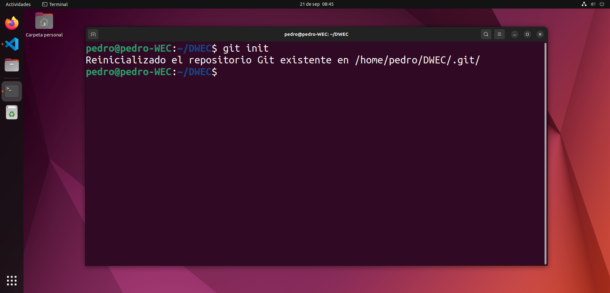
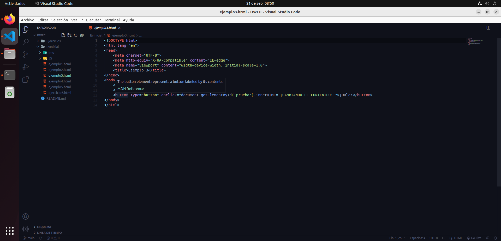
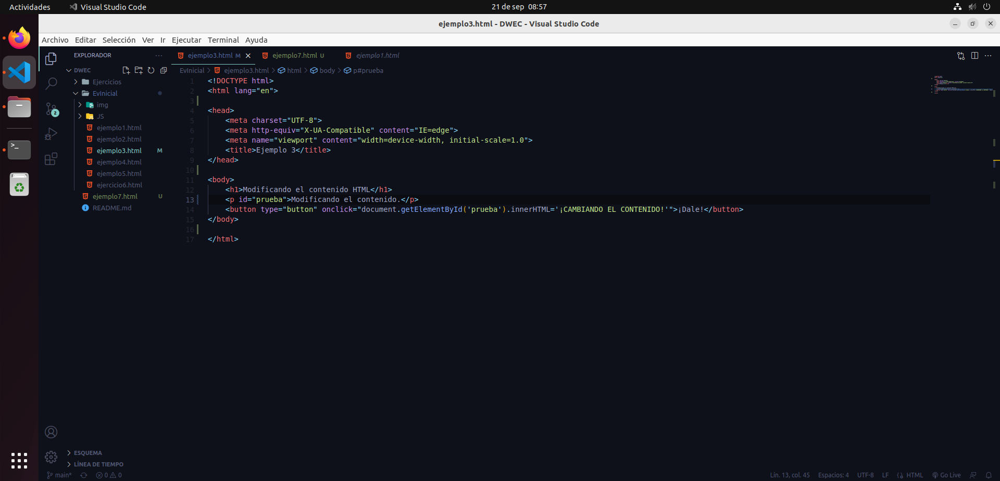
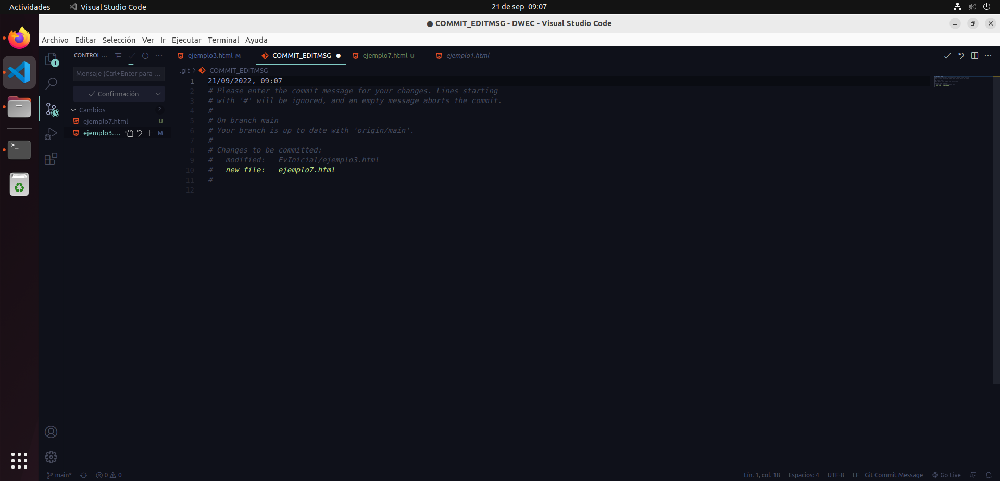
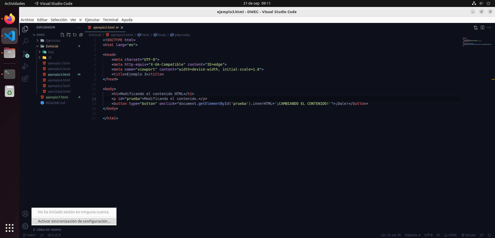
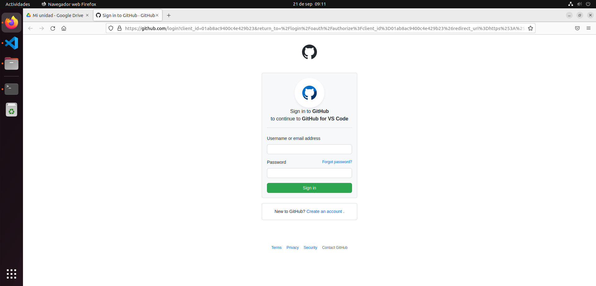

Para empezar, tenemos que tener instalados VS Code y Git, y contar con un repositorio local en nuestra máquina.
En VS Code abrimos el directorio en el que tenemos el repositorio local.
Si todo ha ido bien, VS Code ha debido detectar que ese directorio es un repositorio local y muestra cuando un archivo es modificado o no estaba previamente.
La pestaña de control de código fuente también nos indica el nº de cambios que se han realizado en total. Pero aún no sabe dónde está el repositorio online, así que hay que iniciar sesión en github.
Cuentas -> Activar sincronización de configuración.
Iniciar sesión y activar -> Iniciar sesión con github.
Introducimos los credenciales de github y ya está todo listo.
Ahora podemos confirmar los cambios y sincronizarlos con el repositorio online. Vamos a Control de código fuente -> Opciones -> Commit -> Confirmar todo.
Nos abrirá un archivo donde es necesario escribir un comentario que acompañe a nuestro commit. Una vez escrito, a la derecha de la pantalla le damos a confirmar.